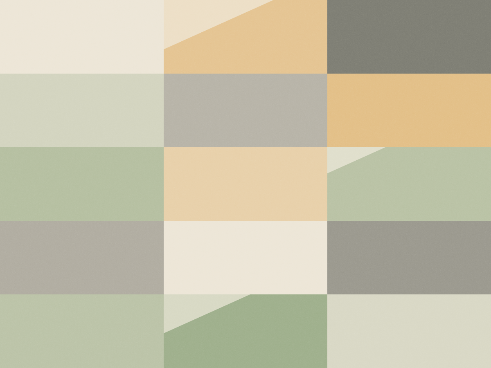
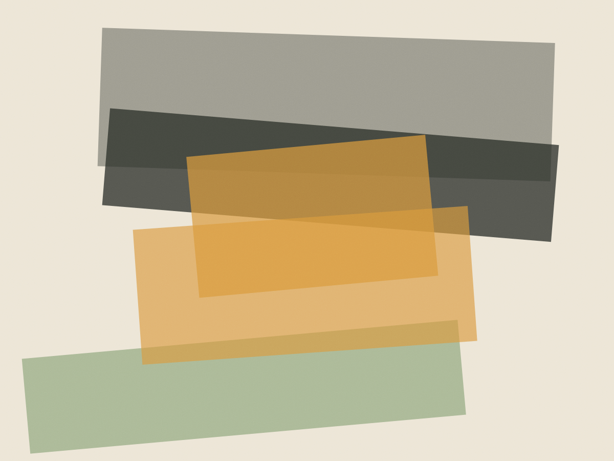
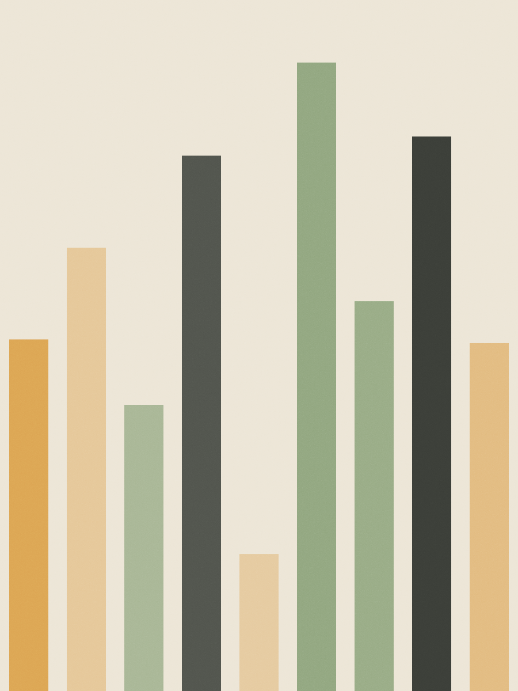
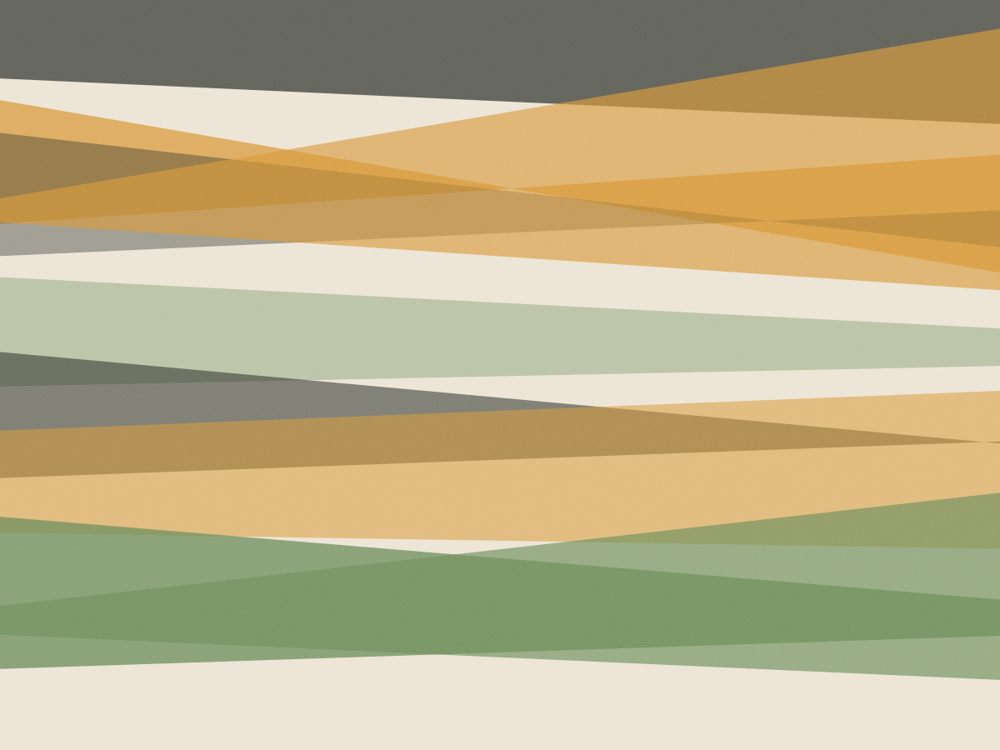
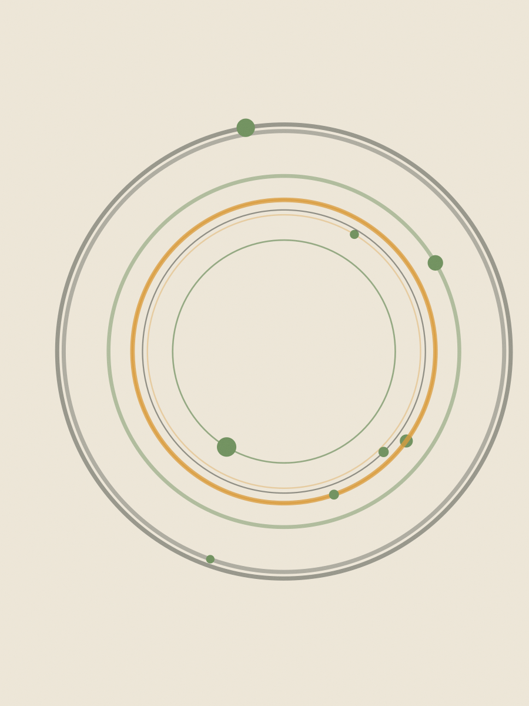
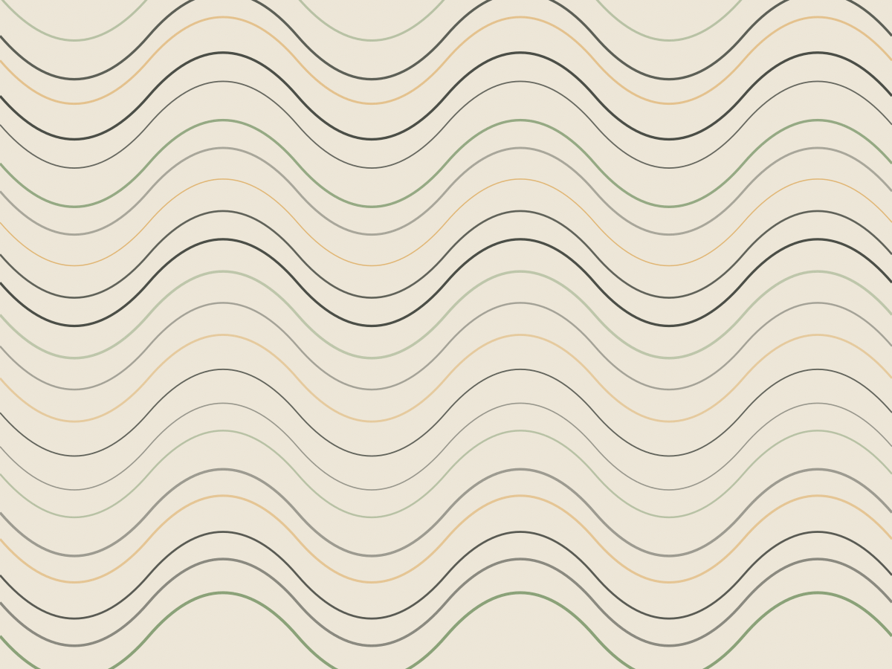

Nutrição clínica · Rua Oscar Freire, 1.232 — Jardins
Primeira consulta com bioimpedância e plano escrito
Setenta minutos para entender o que você come numa semana de verdade, uma bioimpedância feita na hora e um plano alimentar entregue em três dias úteis — com lista de compras e substituições, não com uma folha de dieta pronta.
A consulta, minuto por minuto
A primeira consulta é dividida em quatro blocos. Nenhum deles é exame de sangue: os exames só são pedidos quando a história clínica justifica, e você recebe a solicitação com a justificativa escrita.
-
Anamnese alimentar · 20 min
Recordatório de 24 horas e frequência alimentar da última semana, incluindo o que você come fora de casa e o horário em que consegue comer.
-
Bioimpedância e medidas · 20 min
Aparelho InBody 570, em jejum de 4 horas, sem treino nas 12 horas anteriores. Saem massa magra por segmento, ângulo de fase e água corporal.
-
Rotina, remédios e exames · 20 min
Medicamentos em uso, suplementos que você já toma, histórico familiar e leitura dos exames que você trouxer — mesmo de dois anos atrás.
-
Combinados · 10 min
Quantas refeições cabem no seu dia, o que dá para cozinhar e em quanto tempo o retorno acontece. Você sai sabendo o que será entregue e quando.

Traga na primeira consulta
- Exames de sangue dos últimos 12 meses, se tiver
- Lista dos remédios e suplementos em uso
- Uma foto do prato que você come num dia comum
- Roupa leve para a bioimpedância (ou avental aqui)
Dieta que a pessoa não consegue manter por três semanas não é plano alimentar: é roteiro de culpa. O plano sai do que já está na sua cozinha.
Camila Ferraz, nutricionista — CRN-3 42.118
O consultório em seis quadros
Rua Oscar Freire, 1.232 · conjunto 84 · 8º andar





Quem já passou por aqui
Eu cheguei querendo perder 8 quilos em dois meses. Saí com um plano de quatro refeições que incluía pão de queijo no café. Em cinco meses mudei 6 quilos e a circunferência do abdômen caiu 7 centímetros — sem cortar o que eu gosto.
Sou diabético tipo 2 e a Camila foi a primeira pessoa que olhou minha glicemia junto com o horário do meu trabalho. Ajustou o café da manhã e a HbA1c saiu de 8,1 para 6,7 em sete meses, junto com o endócrino.
Acompanhamento é o que separa orientação de dieta. Por isso o retorno de 30 dias está no preço, e não numa lista de serviços opcionais.
Política do consultório desde 2019
Valores e o que cada um inclui
- Primeira consulta — 70 minBioimpedância, anamnese e plano em PDF em até 3 dias úteisR$ 280
- Retorno — 40 minIncluído na primeira consulta, entre 30 e 45 dias depoisR$ 0
- Acompanhamento mensalUma consulta de 40 min por mês, com ajuste do planoR$ 180
- Trimestre de acompanhamentoTrês consultas pagas à vista, com bioimpedância em cada umaR$ 480
- Bioimpedância avulsaPara quem já é paciente; laudo impresso na horaR$ 70
Aceitamos reembolso de plano de saúde com cobertura em nutrição: nota fiscal e relatório com CRN são emitidos no mesmo dia. Nenhuma consulta é cobrada sem horário confirmado por escrito.
Marque a primeira consulta
Rua Oscar Freire, 1.232 — conjunto 84, Jardins. Metrô Oscar Freire a 300 metros, com estacionamento no prédio a R$ 18 a hora. Atendimento de segunda a sexta, das 8h às 19h.